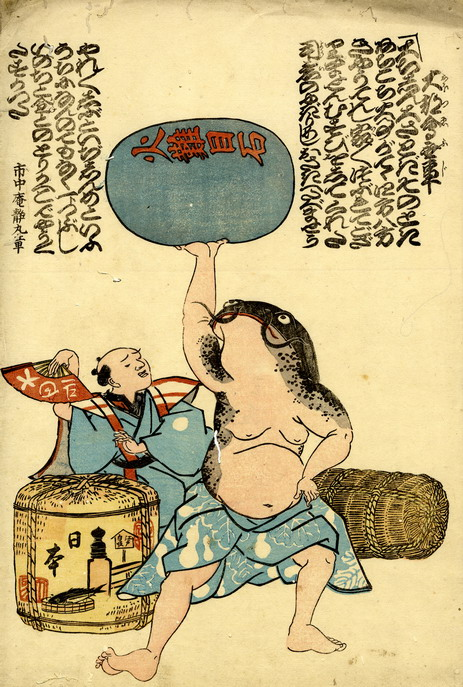

瓢箪柄の着物をはだけた力士姿の鯰。右手を腰に当て、左手で火難目石を持ち上げている。その後ろでは扇子を持った男が囃している。
出典：親書誌：U426_nichibunken_0223：大都会無事；オオツエブジ／日付：2010／資源識別子：U426_nichibunken_0223_0001_0000
Copyright (c)2010- International Research Center for Japanese Studies, Kyoto, Japan. All rights reserved.